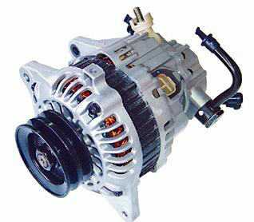
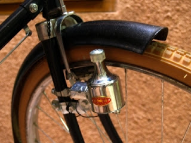
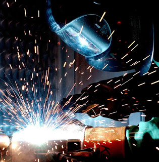

PENGGUNAAN GENERATOR
-
Alternator Mobil
Alternator mobil merupakan salah satu aplikasi dari generator dc. Sistem pengisian pada kendaraan mempunyai 3 rangkaian komponen penting yaitu Aki, Alternator dan Regulator. Alternator sendiri terdiri dari komponen-komponen seperti gabungan kutub magnet yang dinamakan rotor, yang didalamnya terdapat kumparan kawat magnet yang dinamakan stator.

Gambar Altenator
Alternator mulai berfungsi untuk menghasilkan listrik/pembangkit listrik ketika mesin dihidupkan untuk disalurkan ke aki dengan mengkonversi / mengubah tegangan AC menjadi tegangan DC. Sedangkan regulator punya fungsi sebagai alat pengatur dan pembatas voltase yang terdiri dari sebuah rangkaian dioda yang dinamakan rectifier serta dua kipas dalam (internal Fan) untuk menghasilkan sirkulasi udara.
-
Dinamo Sepeda
Dinamo sepeda merupakan generator kecil yang dapat menghasilkan arus listrik yang kecil pula. pada Dinamo sepeda prinsip kerjanya yaitu energi gerak di ubah menjadi energi listrik .

Gambar Dinamo Sepeda
Dinamo sepeda ini hanya menyalakan lampu depan dan belakang terangnnya lampu ditentukan oleh cepatnya roda berputar yang mengakibatkan dinamo juga cepat dan arus listrik juga akn besar pula. Dinamo sepeda intinya adalah sebuah magnet yang dapat berputar dan sebuah kumparan tetap.
-
Las Listrik
Las listrik juga merupakan aplikasi dari generator dc. Las listrik adalah teknik menyambung dua bagian logam memanfaatkan tenaga panas yang diperoleh dari sumber tenaga listrik AC maupun DC dengan tambahan logam pengisi.

Gambar Las Listrik
Sumber tenaga panas mencairkan sebagian logam induk dan logam pengisi. Sumber tenaga panas mencairkan sebagian logam induk dan logsm pengisi sehingga diperoleh sambungan permanen yang sulit dipisahkan. Pekerjaan las listrik memiliki resiko bahaya kecelakaan cukup besar yang dapat diminimalkan dengan alat keselamatan kerja.